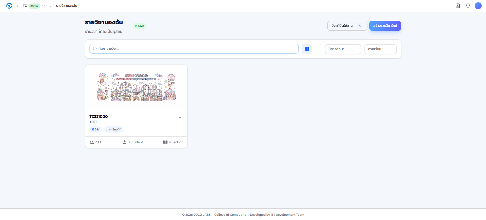
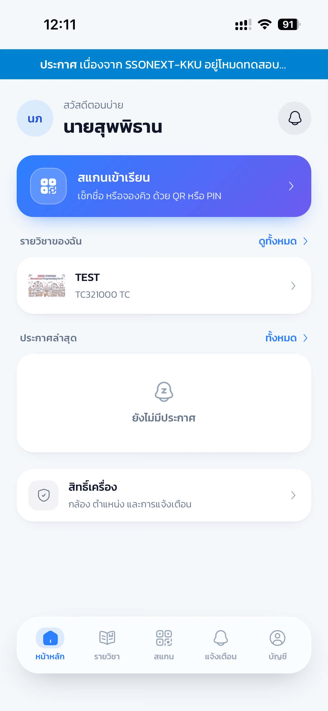
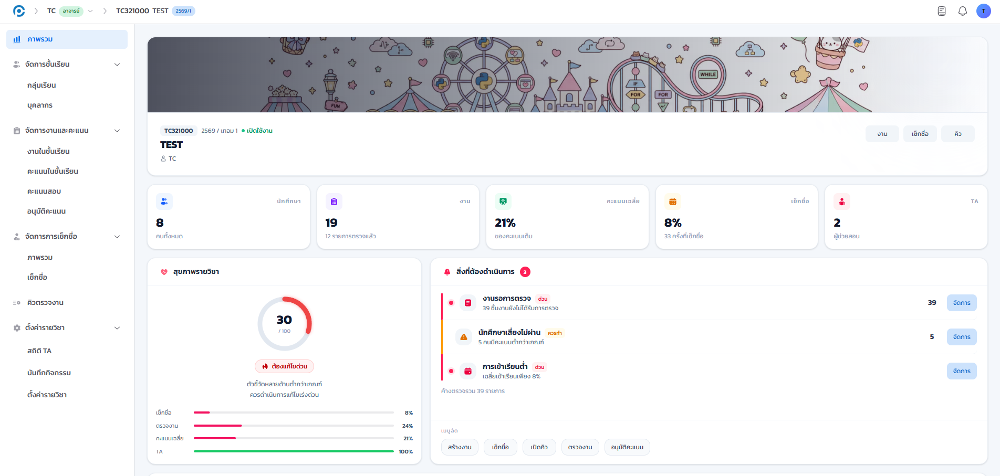

1.1 วัตถุประสงค์ของคู่มือ#
คู่มือฉบับนี้จัดทำขึ้นเพื่อเป็นเอกสารอ้างอิงประกอบการใช้งานระบบจัดการเรียนการสอนปฏิบัติการและการประเมินผล (COCO LABS) ของวิทยาลัยการคอมพิวเตอร์ มหาวิทยาลัยขอนแก่น โดยมีวัตถุประสงค์ดังนี้
- เพื่อให้ผู้ใช้งานทุกบทบาท ได้แก่ ผู้ดูแลระบบ อาจารย์ผู้สอน ผู้ช่วยสอน และนักศึกษา ใช้งานระบบได้ด้วยตนเองอย่างถูกต้องครบถ้วนทุกขั้นตอน
- เพื่อรวบรวมขั้นตอนการปฏิบัติงานประจำของแต่ละบทบาทไว้ในเอกสารฉบับเดียว พร้อมภาพหน้าจอจริงจากระบบประกอบทุกขั้นตอนสำคัญ
- เพื่อเป็นเอกสารอ้างอิงสิทธิ์การใช้งานรายวิชา และข้อกำหนดด้านความปลอดภัยของระบบ สำหรับการมอบหมายงานและการกำกับดูแล
1.2 ขอบเขตของคู่มือ#
คู่มือฉบับนี้เป็น ฉบับปรับปรุง ครอบคลุมการใช้งานระบบ COCO LABS ทุกบทบาทและทุกสิทธิ์ ตรวจสอบเนื้อหาเทียบกับระบบเวอร์ชันปัจจุบันแล้วทุกจุด เนื้อหาแบ่งเป็น 5 ภาค ได้แก่ ภาคที่ 1 ส่วนกลางที่ใช้ร่วมกันทุกบทบาท (บทที่ 1-2) ภาคที่ 2 ผู้ดูแลระบบ (บทที่ 3) ภาคที่ 3 อาจารย์ผู้สอน (บทที่ 4-14) ภาคที่ 4 ผู้ช่วยสอน (บทที่ 15-18) และภาคที่ 5 นักศึกษา (บทที่ 19) ผู้ใช้แต่ละบทบาทเลือกอ่านเฉพาะภาคของตนได้โดยไม่ต้องอ่านทั้งเล่ม
เลขบทในคู่มือฉบับนี้ยึดตามลำดับเดิม บทที่ 12 (การจับคู่จอแสดงผลหน้าห้อง) ถูกถอดออกจากขอบเขตของคู่มือฉบับนี้ชั่วคราว จึงพบว่าเลขบทกระโดดจากบทที่ 11 ไปบทที่ 13 โดยตรง ไม่ใช่การพิมพ์ตกหล่น
1.3 ภาพรวมระบบและบทบาทผู้ใช้#
COCO LABS เป็นเว็บแอปพลิเคชันช่วยงานอาจารย์และผู้ช่วยสอนในการบริหารห้องเรียนและห้องปฏิบัติการ ครอบคลุมการเช็กชื่อเข้าเรียน การจัดคิวตรวจงาน การให้คะแนน การจัดการคะแนนสอบ และงานธุรการรายวิชา โดยแบ่งผู้ใช้เป็น 4 บทบาท
| บทบาท | ขอบเขตการใช้งาน |
|---|---|
| ผู้ดูแลระบบ (Admin) | เข้าถึงทุกส่วน จัดการผู้ใช้ นักศึกษา รายวิชา ห้องเรียน และการดำเนินงานระบบ |
| อาจารย์ (Instructor) | เจ้าของวิชา จัดการรายวิชาของตนได้ทั้งหมด และมอบสิทธิ์ให้ผู้ช่วยสอน |
| ผู้ช่วยสอน (TA) | ทำงานในรายวิชาตามสิทธิ์ที่อาจารย์กำหนด (ดูรายละเอียดสิทธิ์ทั้งหมดในบทที่ 6) |
| นักศึกษา (Student) | เข้าสู่ระบบด้วยบัญชี KKU Mail ผ่าน KKU SSO แล้วเช็กชื่อ/จองคิวผ่านการสแกน QR และ PIN และดูคะแนนกับประวัติของตน |
หน้าแรกที่ผู้ใช้เห็นหลังล็อกอินต่างกันไปตามบทบาท ตัวอย่างเช่น อาจารย์เห็นรายการรายวิชาที่ตนสอน ส่วนนักศึกษาเห็นหน้าหลักแบบสรุปรวมทุกวิชาที่ลงทะเบียน



1.4 โมเดลสิทธิ์ของระบบ#
ระบบใช้สิทธิ์ซ้อนกัน 4 ชั้น ซึ่งอธิบายได้ว่าเหตุใดผู้ใช้แต่ละคนจึงเห็นเมนูไม่เท่ากัน
- บทบาทระดับระบบ (Global Role) ได้แก่ ผู้ดูแลระบบ อาจารย์ ผู้ช่วยสอน และนักศึกษา
- สิทธิ์รายวิชา (Course-scoped Permission) อาจารย์และผู้ช่วยสอนแต่ละคนได้รับสิทธิ์รายวิชาแบบละเอียด 39 รายการใน 3 หมวด เมนูภายในห้องเรียนของแต่ละคนขึ้นกับสิทธิ์ชุดนี้ (รายการสิทธิ์ทั้งหมดและวิธีตั้งค่า ดูบทที่ 6)
- Feature Flags ระดับระบบ ผู้ดูแลระบบเปิด/ปิดฟีเจอร์รายส่วนได้ทันที หากฟีเจอร์ถูกปิด เมนูนั้นจะหายไปจากผู้ใช้ทุกคน
- การยืนยันตัวตนซ้ำ (Step-up 2FA) การกระทำสำคัญของผู้ดูแลระบบต้องยืนยันรหัส 2FA อีกครั้งก่อนทำ (ตัวอย่างหน้าจอดูบทที่ 2)
รายชื่อการกระทำที่ต้องยืนยันตัวตนซ้ำในโค้ดฝั่งเซิร์ฟเวอร์ยังไม่ครบทุกจุดที่ควรบังคับ (เช่น การรีสตาร์ทบริการ) ทีมพัฒนากำลังตรวจสอบให้ตรงกัน หากพบว่าขั้นตอนใดไม่ขอยืนยันซ้ำตามที่คาดไว้ ให้แจ้งผู้ดูแลระบบ
1.5 นิยามศัพท์และคำย่อ#
| คำศัพท์ / คำย่อ | ความหมาย |
|---|---|
| COCO LABS | ระบบจัดการเรียนการสอนปฏิบัติการและการประเมินผล ซึ่งเป็นระบบที่คู่มือฉบับนี้อธิบาย |
| รอบเช็กชื่อ (Session) | ช่วงเวลาที่อาจารย์เปิดให้นักศึกษายืนยันการเข้าเรียนในคาบหนึ่ง ๆ |
| PIN | รหัสตัวเลข 6 หลักที่ระบบสร้างขึ้นเพื่อยืนยันการเช็กชื่อหรือเข้ารอบคิว ตามค่าเริ่มต้นระบบจะสุ่ม PIN ใหม่ทุก 1 นาที แต่อาจารย์ปิดการหมุนไว้เป็น PIN คงที่ได้เช่นกัน |
| QR Code | รหัสภาพที่ฉายบนจอหน้าห้องหรือติดประจำโต๊ะ ใช้สแกนเพื่อเข้าสู่รอบเช็กชื่อหรือรอบคิวโดยตรง |
| รอบคิว (Queue Session) | ช่วงเวลาที่เปิดให้นักศึกษาจองคิวส่งตรวจงานหรือขอความช่วยเหลือ |
| ผู้ตรวจ (Worker) | อาจารย์หรือผู้ช่วยสอนที่เปิดหน้ารับงานในรอบคิวเพื่อรับตรวจงานตามลำดับ |
| คิวจับคู่ข้ามวิชา (Mirror Queue) | การเชื่อมรอบคิวของสองรายวิชาเข้าด้วยกัน ทำให้ผู้ช่วยสอนที่ไม่มีสิทธิ์ในอีกวิชาหนึ่งยังรับงานตรวจข้ามวิชาได้ในรอบที่เชื่อมไว้ (ดูบทที่ 11) |
| สิทธิ์รายวิชา (Course-scoped Permission) | สิทธิ์การใช้งานระดับรายวิชา 39 รายการ ที่อาจารย์เจ้าของวิชากำหนดให้บุคลากรรายคน |
| ชุดสิทธิ์สำเร็จรูป (Preset) | ชุดสิทธิ์รายวิชาที่ระบบจัดเตรียมไว้ให้เลือกใช้ 3 ชุด แล้วปรับรายข้อเพิ่มเติมได้ |
| KKU SSO | ระบบยืนยันตัวตนกลางของมหาวิทยาลัยขอนแก่น (SSONext) ช่องทางเข้าสู่ระบบหลักของทุกบทบาท |
| การยืนยันตัวตนสองชั้น (2FA) | การยืนยันตัวตนด้วยรหัสจากแอปพลิเคชันหรืออีเมลเพิ่มเติมจากรหัสผ่าน |
| Step-up 2FA | การขอรหัส 2FA ซ้ำอีกครั้งก่อนการกระทำสำคัญของผู้ดูแลระบบ แม้เข้าสู่ระบบอยู่แล้ว |
| Feature Flag | สวิตช์เปิดปิดฟีเจอร์รายส่วนของระบบ ซึ่งผู้ดูแลระบบควบคุมได้ทันที |
| KKU Mail | บัญชีอีเมลของมหาวิทยาลัยขอนแก่น ใช้เป็นบัญชีเข้าสู่ระบบของนักศึกษา |
1.6 ข้อตกลงที่ใช้ในคู่มือฉบับนี้#
เพื่อให้อ่านแล้วปฏิบัติตามได้ทันที คู่มือฉบับนี้ใช้ข้อตกลงในการนำเสนอดังนี้
- ทุกหัวข้อย่อยเริ่มด้วยบรรทัด เป้าหมายของขั้นตอนนี้ บอกก่อนว่าทำไปเพื่ออะไร แล้วจึงตามด้วยขั้นตอน
- สิ่งที่ต้องกดหรือกรอกอยู่ในกล่อง สิ่งที่ต้องทำ เป็นลำดับหมายเลขเสมอ ส่วนคำอธิบายองค์ประกอบบนหน้าจอที่ไม่ต้องกดอะไรอยู่ในกล่องพื้นหลังสีเทา องค์ประกอบบนหน้านี้ แยกออกจากกันชัดเจนโดยตั้งใจ เพื่อไม่ให้สับสนว่าอันไหนต้องลงมือทำ
- กล่องสีเขียว ผลลัพธ์ที่ควรเห็น ปรากฏหลังขั้นตอนสำคัญ ใช้ตรวจสอบว่าทำถูกต้องหรือไม่ กล่องสีฟ้า คำแนะนำ ให้เคล็ดลับเพิ่มเติม และกล่องสีเหลือง ข้อควรระวัง เตือนจุดที่พลาดบ่อยหรือพฤติกรรมของระบบที่อาจไม่ตรงกับที่คาดไว้
- ชื่อปุ่ม ชื่อเมนู และข้อความที่ปรากฏบนหน้าจอ พิมพ์ด้วย ตัวหนา เช่น กด บันทึก
- ภาพประกอบทุกภาพถ่ายจากระบบจริง วางไว้ต่อจากขั้นตอนหรือคำอธิบายที่เกี่ยวข้องโดยตรง ภาพประกอบถ่ายจากรายวิชาตัวอย่าง TC321000 TEST และปกปิดข้อมูลส่วนบุคคลจริงของนักศึกษาและผู้ใช้ทุกภาพเพื่อคุ้มครองข้อมูลส่วนบุคคล
- เมนูที่ผู้ใช้แต่ละคนมองเห็นอาจไม่เท่ากัน ขึ้นอยู่กับสิทธิ์ที่ได้รับ หากไม่พบเมนูที่คู่มือกล่าวถึง ให้ตรวจสอบสิทธิ์กับอาจารย์เจ้าของวิชาหรือผู้ดูแลระบบ
1.7 สิ่งที่เพิ่มและเปลี่ยนแปลงล่าสุด#
ระบบมีการพัฒนาต่อเนื่อง ฟังก์ชันสำคัญที่ควรทราบก่อนอ่านบทถัดไป ได้แก่ การเข้าสู่ระบบด้วย KKU SSO เป็นช่องทางหลักของทุกบทบาท (แทนที่ Google/GitHub เดิม ซึ่งปัจจุบันเหลือเป็นทางเลือกสำรองเท่านั้น) ระบบสิทธิ์รายวิชา 39 รายการพร้อมชุดสิทธิ์สำเร็จรูป PIN เช็กชื่อแบบหมุนอัตโนมัติหรือคงที่ตามที่อาจารย์เลือก คิวจับคู่ข้ามวิชาสำหรับผู้ช่วยสอน รายงานประสิทธิภาพผู้ตรวจ คะแนนพิเศษแบบถาม-ตอบ งานแบบฉบับร่าง การแจ้งเตือนแบบ Push และในระบบ ศูนย์ช่วยเหลือ ตลอดจนเครื่องมือผู้ดูแลระบบชุดใหม่ (ประกาศระบบแบบหลายสถานะและหลายรูปแบบการแสดงผล บันทึกกิจกรรมแบบไทม์ไลน์พร้อมรายละเอียดเชิงลึก Feature Flags โหมดบำรุงรักษา สำรอง/กู้คืนฐานข้อมูล Service Health) รายละเอียดของแต่ละหัวข้ออยู่ในบทที่เกี่ยวข้องโดยตรง